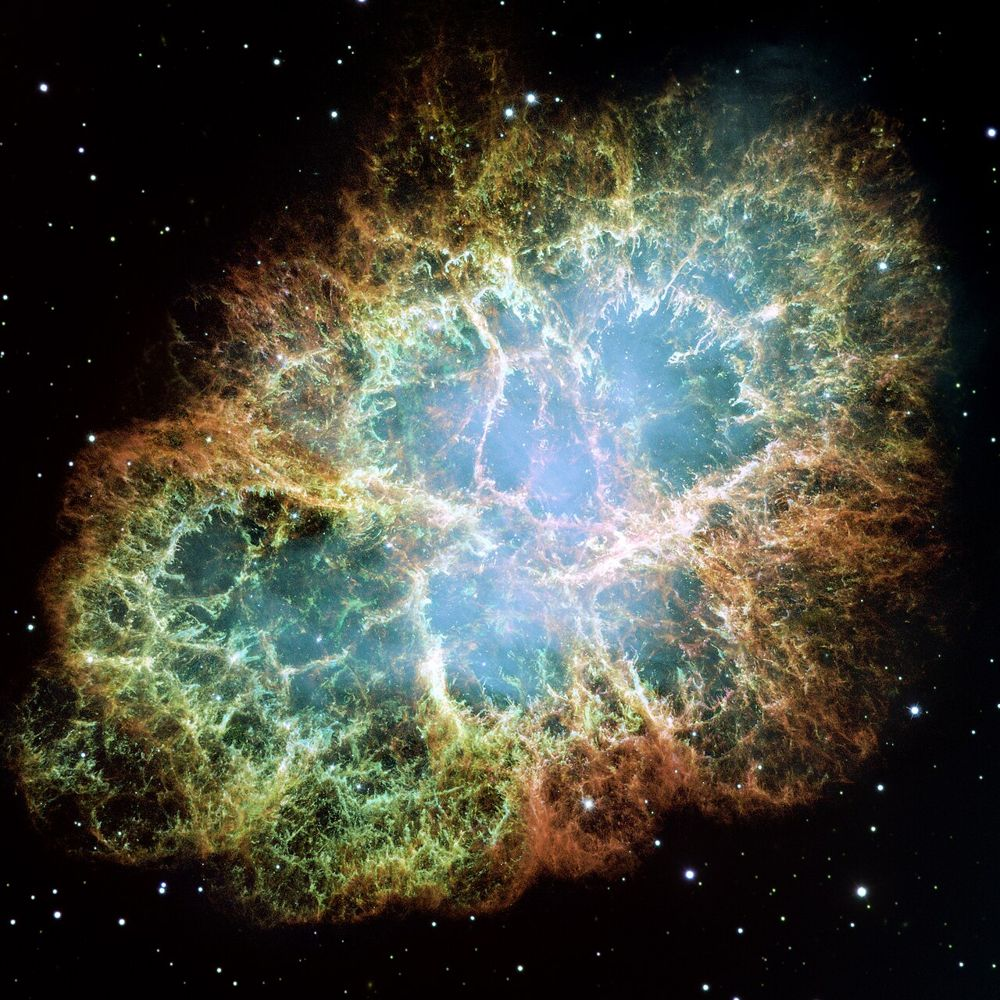
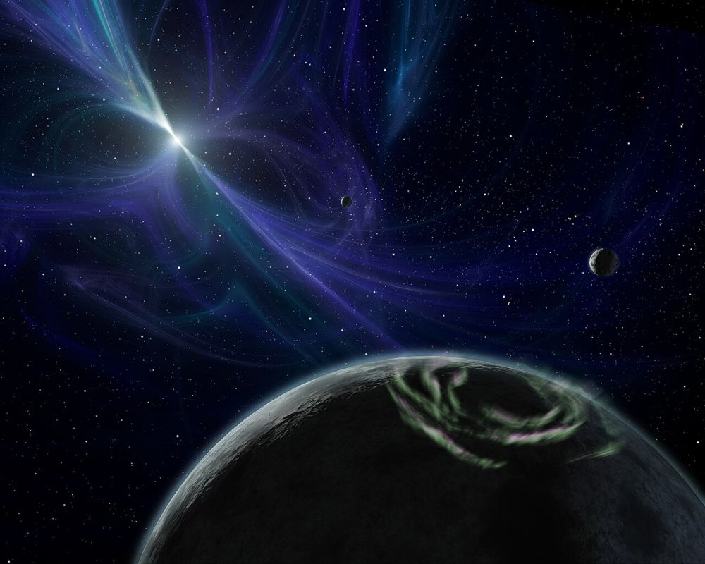

1Bir yıldızın ölümü
Yıldızlar çekirdeklerinde hidrojen atomlarını birleştirerek enerji üretir. Bu enerji, yıldızın kendi ağırlığı altında çökmesini engeller. Yakıt bittiğinde ise bu denge bozulur.
Güneş'ten en az 8 kat büyük kütleli bir yıldızın yakıtı tükendiğinde çekirdeği saniyenin çok küçük bir kesrinde çöker. Yıldızın dış katmanları ise muazzam bir patlamayla uzaya saçılır. Buna süpernova denir. Bir süpernova kısa bir süre için koca bir galaksi kadar parlak görünebilir.

2Geriye kalan: Nötron yıldızı
Çöken çekirdekteki basınç o kadar büyüktür ki atomlar parçalanır. Elektronlar protonların içine bastırılır ve nötronlara dönüşür. Sonuçta geriye neredeyse tamamen nötronlardan oluşan, aşırı sıkışmış bir küre kalır. Bu bir nötron yıldızıdır.
Bir nötron yıldızının kütlesi genellikle Güneş'ten fazladır ama çapı yalnızca yaklaşık 20 km'dir. Yani Güneş'ten ağır bir kütle, bir şehir büyüklüğünde bir küreye sığmıştır.
3Akıl almaz yoğunluk
Normal maddenin büyük kısmı aslında boşluktur. Bir atomun çekirdeği, atomun kendisine göre son derece küçüktür. Elektronlar ise çekirdekten çok uzakta dolaşır. Nötron yıldızında bu boşluk neredeyse tamamen ortadan kalkar.
NASA'ya göre bir nötron yıldızından alınacak şeker küpü büyüklüğünde bir parça, Dünya'da yaklaşık 1 milyar ton gelirdi. Bu, yaklaşık bir dağın ağırlığına denk gelir. Bir nötron yıldızının yüzeyindeki yerçekimi Dünya'dakinden milyarlarca kat güçlüdür.

4Pulsarlar: Kozmik deniz fenerleri
Bir buz patencisi kollarını kendine çektiğinde nasıl hızla dönmeye başlarsa, çöken yıldız çekirdeği de küçüldükçe çok hızlı dönmeye başlar. Bazı nötron yıldızları saniyede yüzlerce kez döner. Ayrıca çok güçlü manyetik alanları vardır.
Bu yıldızlar kutuplarından ışın demetleri yayar. Yıldız döndükçe bu ışınlar bir deniz feneri gibi uzayı tarar. Işın Dünya'ya her döndüğünde düzenli bir 'atım' algılarız. Bu tür nötron yıldızlarına pulsar denir. İlk pulsar 1967'de Jocelyn Bell Burnell tarafından keşfedildi.
Görseldeki Yengeç Bulutsusu, 1054 yılında Çinli ve Arap gökbilimcilerin kaydettiği bir süpernovanın kalıntısıdır. Merkezinde saniyede yaklaşık 30 kez dönen bir pulsar bulunur.
💡 Biliyor muydun?
- 2017'de iki nötron yıldızının çarpışmasından gelen kütleçekim dalgaları ilk kez algılandı. Bu tür çarpışmaların evrendeki altının önemli bir kaynağı olduğu düşünülüyor.
- Bir nötron yıldızı biraz daha ağır olsaydı, çökmeye devam ederek kara deliğe dönüşürdü.
- Bilinen en hızlı dönen pulsar saniyede 700'den fazla tur atıyor.
✅ Kaynaklar
📷 Görseller
- Kapak: NASA, ESA · CC BY 4.0 · Wikimedia Commons
- Hubble Uzay Teleskobu'nun Yengeç Bulutsusu mozaiği: NASA, ESA, J. Hester and A. Loll (Arizona State University) · Public domain · Wikimedia Commons
- Bir pulsar ve çevresindeki gezegenlerin sanatçı çizimi: NASA/JPL-Caltech · Public domain · Wikimedia Commons